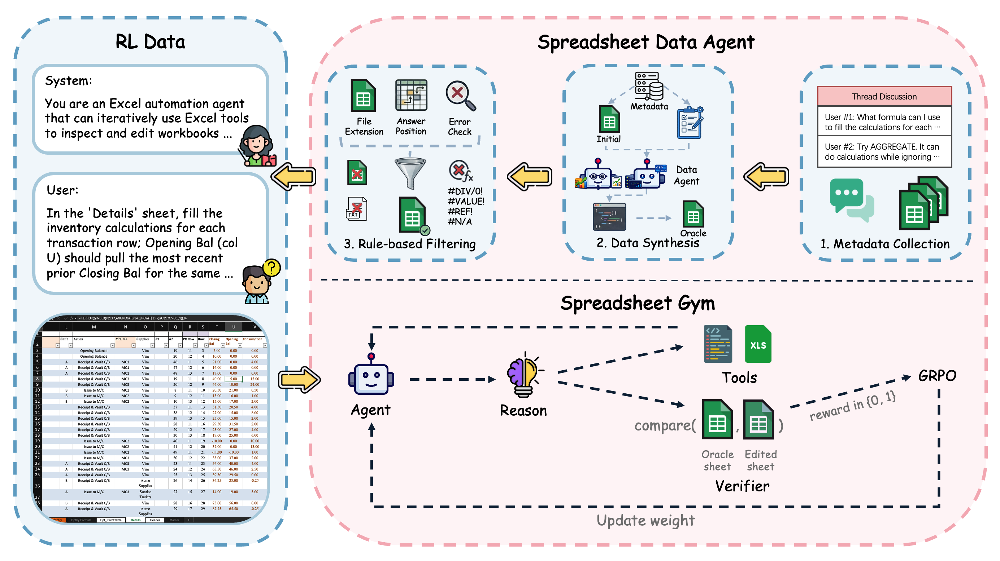
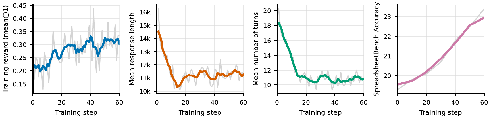
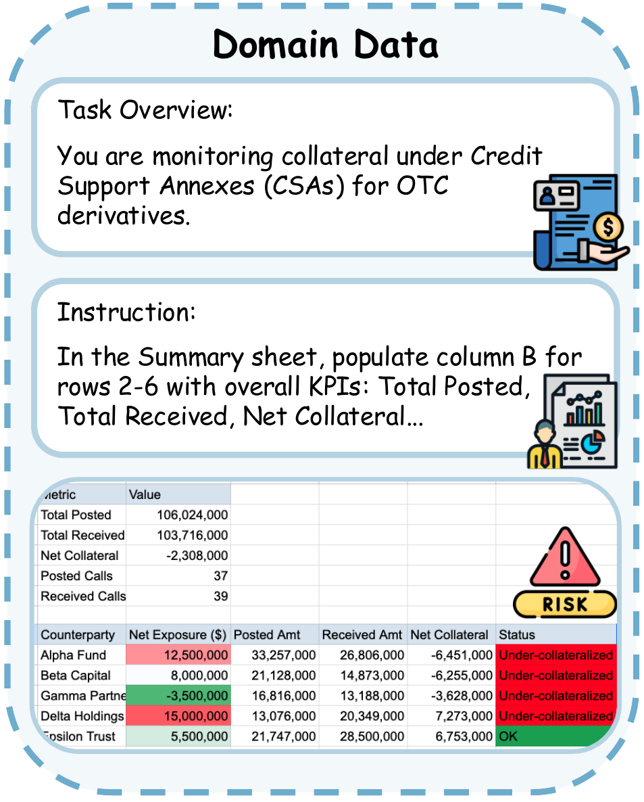

News
- Released the Spreadsheet-RL-4B model checkpoint on Hugging Face at Spreadsheet-RL/Spreadsheet-RL-4B, the RL-trained Qwen3-4B-Thinking-2507 spreadsheet agent used in the paper.
- The Spreadsheet-RL project page is now live at https://spreadsheet-rl.github.io/, with the paper overview, framework, results, resources, and citation.
- The Spreadsheet-RL arXiv preprint is available at arXiv:2605.22642, and the paper is featured on Hugging Face Daily Papers.
- Code and dataset release for Spreadsheet-RL, including training configs, Slurm scripts, the Excel reward service, SandboxFusion setup, parquet splits, and workbook files.
Abstract
Spreadsheet systems such as Microsoft Excel and Google Sheets are central to modern data-centric workflows, but existing spreadsheet agents often rely on prompt engineering over general-purpose models and struggle with complex, multi-step tasks. Spreadsheet-RL is an RL fine-tuning framework for training specialized spreadsheet agents inside a realistic Microsoft Excel environment.
The framework combines scalable start-goal spreadsheet construction, a multi-turn Spreadsheet Gym with spreadsheet-native tools and sandboxed code execution, and outcome-based GRPO training. On SpreadsheetBench, Spreadsheet-RL improves Qwen3-4B-Thinking-2507 Pass@1 from 12.0% to 23.4%; on Domain-Spreadsheet, it improves Pass@1 from 8.4% to 17.2%.
Framework
Spreadsheet-RL links realistic data construction, faithful Excel interaction, and verifiable outcome rewards into one reproducible training loop.

Spreadsheet Data Agent
Collects public ExcelForum threads after January 1, 2024, synthesizes oracle final workbooks with coding agents, and filters tasks through rule-based validation.
Spreadsheet Gym
Runs multi-turn agent rollouts in Microsoft Excel with isolated workspaces, spreadsheet-native tools, and SandboxFusion-backed code execution.
Outcome-Based RL
Uses an asynchronous Excel reward API to recalculate final workbooks and compare target ranges against oracle workbooks for GRPO training.
Results
Spreadsheet-native harnessing, richer tool access, and RL post-training each improve the same 4B open-source base model.
SpreadsheetBench Pass@1
| Qwen3-4B-Thinking-2507 Setting | Environment | Pass@1 |
|---|---|---|
| Base model | Spreadsheet Gym | 12.0 |
| + Spreadsheet-native interaction harness | Spreadsheet Gym | 15.6 |
| + Comprehensive spreadsheet-tool access | Spreadsheet Gym | 19.3 |
| + Spreadsheet-RL post-training | Spreadsheet Gym | 23.4 |
Domain-Spreadsheet Pass@1
| Domain | #Eval. | Base | RL |
|---|---|---|---|
| Finance-B | 597 | 15.6 | 29.3 |
| Finance-I | 388 | 7.7 | 16.2 |
| Finance-A | 135 | 8.1 | 19.3 |
| Supply Chain | 180 | 1.1 | 5.0 |
| HR | 185 | 0.5 | 3.2 |
| Sales | 86 | 1.2 | 5.8 |
| Real Estate | 89 | 1.1 | 1.1 |
| Overall | 1,660 | 8.4 | 17.2 |

Domain-Spreadsheet
Domain-Spreadsheet is a domain-specific benchmark covering finance, supply chain management, human resources, sales, and real estate. It emphasizes professional analytical workflows such as comparable-company analysis, value-at-risk computation, inventory analysis, compensation benchmarking, and property valuation.
The released Hugging Face dataset contains parser-specific parquet files and a workbook archive with ExcelForum training tasks, SpreadsheetBench tasks, and Domain-Spreadsheet tasks.

Citation
BibTeX
@misc{chi2026spreadsheetrl,
title = {Spreadsheet-RL: Advancing Large Language Model Agents on Realistic Spreadsheet Tasks via Reinforcement Learning},
author = {Banghao Chi and Yining Xie and Mingyuan Wu and Jingcheng Yang and Jize Jiang and Zhaoheng Li and Shengyi Qian and Minjia Zhang and Klara Nahrstedt and Rui Hou and Xiangjun Fan and Hanchao Yu},
year = {2026},
eprint = {2605.22642},
archivePrefix = {arXiv},
primaryClass = {cs.AI},
doi = {10.48550/arXiv.2605.22642},
url = {https://arxiv.org/abs/2605.22642}
}